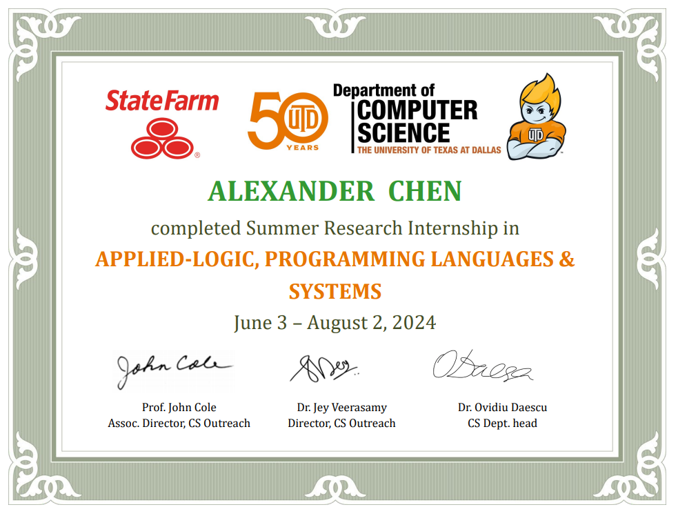

“While at a conference a few weeks back, I spent an interesting evening with a grain of salt.”
This was one of many nonsensical phrases posted by the user “Mark V. Shaney” on Usenet in the 1980s.
Many readers thought Mark was a deranged person, but he was actually a program designed by Rob Pike.
Pike’s program was an early form of AI which “learned” to construct sentences by calculating which
words often went together in text. Decades later, more sophisticated AI programs like ChatGPT have emerged.
With exponentially larger datasets and more powerful computing resources, these programs are far more capable.
Today’s chatbots can easily fool readers with extremely human-like responses. However, AI programs still
make errors reminiscent of Mark V. Shaney. For example, when asked on September 11th about the date of the
Trump v. Harris presidential debate, ChatGPT responded, “The Trump vs. Harris debate you’re referring to
took place on September 17, 2024.” Why do such advanced programs like ChatGPT still make mistakes like
this? The reason is because they lack reasoning.
The flaw lies in the “machine learning” approach this type of AI follows. It attempts to build and adjust
mathematical functions to model training data and then apply these functions to the given task.
Conceptually, this approach is the same as that which Mark V. Shaney followed. Mark used a Markov chain
to model which words often went together in sentences and then generated new sentences from that information.
The process involves no reasoning; it is purely statistics and cannot be explained. We humans do not guess
at conclusions by using mathematical functions; we deduce conclusions using logic and reason. When we
reason, we understand why our conclusions are valid. Machine learning doesn’t reason, and this lack of
reason raises serious concerns about the reliability of its output. How can we trust a program if we’re
not able to explain what it produces?
A plausible solution lies in “explainable AI” (XAI) which, instead of relying on statistics, models
reasoning directly. This summer, I studied at the UT Dallas Applied Logic and Programming Systems (ALPS)
Lab where we explored how the human thought process could be formalized using the logic programming
language Prolog. By representing knowledge as programmatic facts and rules in Prolog, we could model
an explainable decision process. XAI utilizes this approach: instead of mathematical functions,
XAI uses logic to actually derive conclusions. With this AI, one can actually see the program’s
“thought process”, the facts and rules the program followed to derive its conclusion. XAI has the
potential to be utilized in the construction of much more powerful AI programs.
XAI is already used in practice together with machine learning. “Reliable chatbots” use LLMs to
extract facts which are then passed to an XAI to “understand”. The XAI backend keeps chatbots
in check from hallucinating while correctly answering requests. Professor Gopal Gupta, who leads
the UT Dallas ALPS Lab, presented the “FOLD-SE” algorithm which generates rule sets for XAI to perform
tabular classification tasks, offering an explainable alternative to pure machine learning classification.
Another ongoing project “Rules as Code”, by Jason Morris, aims to use XAI to automate law and legal
services. XAI overcomes the “black-box barrier” of machine learning, opening the door to reliable
automation of decision-making tasks. Prolog programs appeared around the same time as Markov chains,
and we’ve already seen how the latter has grown with modern advancement.
If Mark V. Shaney could grow into ChatGPT, what could advancement in XAI lead to?
Sources:
Mark V. Shaney: https://en.wikipedia.org/wiki/Mark_V._Shaney
General XAI: https://en.wikipedia.org/wiki/Explainable_artificial_intelligence
FOLD-SE: https://arxiv.org/abs/2208.07912
Rules As Code: https://law.mit.edu/pub/blawxrulesascodedemonstration/release/1
